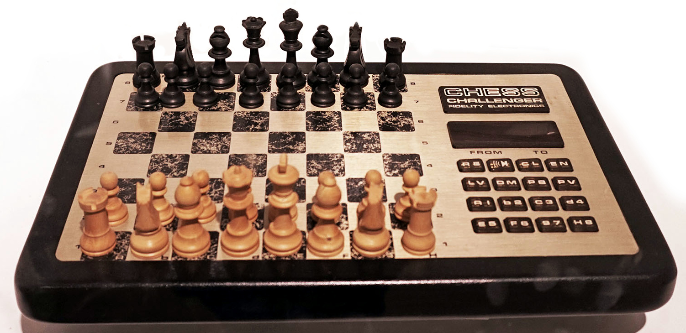
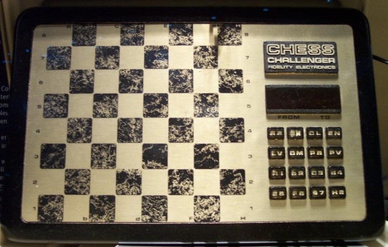

Fidelity Voice Sensory Chess Challenger
The chess computer that felt your move and talked back

Overview
Fidelity Electronics of Chicago built the first commercial chess computer, the Chess Challenger 1 (1977), designed by programmer Ron Nelson. The line evolved rapidly: the 1979 Voice Chess Challenger was the first talking chess computer, and the 1980 Voice Sensory Chess Challenger added the pressure-sensing board. It ran on a Z80 at 4 MHz with 1 KB of RAM and 20 KB of ROM, plus a dedicated speech ROM.
The interaction model is what makes it a museum piece. To move, you press a piece down on its destination square: the 64 pressure-sensing squares read the move directly. There is no keypad, no coordinate entry, no typing — the chessboard itself is the input device. The computer replies by speaking its own move aloud through the speech ROM, with an LED display confirming the position.
The Chess Challenger lineage is preserved across major museums: the Victoria and Albert Museum holds a Fidelity Mini Sensory Chess Challenger (1981), the Computer History Museum holds a Sensory Chess Challenger (1982), and MAME — the arcade emulator — even carries a Voice Sensory Chess Challenger (German) ROM set, keeping the 1980 software alive decades later.
Deep dive
Before sensory boards, playing a computer meant typing coordinates into a keypad. The Chess Challenger sensory line inverted that: the physical board became the input, so the player's hands stayed where chess is played. Press the square and the machine knows. The paradigm outlived Fidelity — nearly every chess computer since, from Novag to modern Bluetooth boards, inherited the press-the-square interaction.
The 1979 Voice Chess Challenger was the first talking chess computer; the 1980 model joined voice output to the sensory board. Announcing moves in speech is a tiny thing and a strange one — the machine asserts a presence in the room, an opponent rather than a box. It also presaged the speech-ROM era that the decade's toys and appliances would flood into.
Team & pioneers
- Fidelity Electronics, Ltd. Chicago manufacturer of the Chess Challenger line and the first commercial chess computer (1977).
- Ron Nelson. Programmer of the Chess Challenger series including the Voice Sensory model.
- Victoria and Albert Museum. Holds a Fidelity Mini Sensory Chess Challenger (1981).
- Computer History Museum. Holds a Fidelity Sensory Chess Challenger (1982), gift of Tony Marsland.
Media

Sources
- Wikimedia Commons — Fidelity Chess Challenger Voice (Deutsches Museum)
- Schachcomputer.info Wiki — Fidelity Voice Sensory Chess Challenger (German)
- Victoria and Albert Museum — Mini Sensory Chess Challenger
- Computer History Museum — Sensory Chess Challenger
- Gadgetify — Fidelity Advanced Voice Chess Challenger 1979